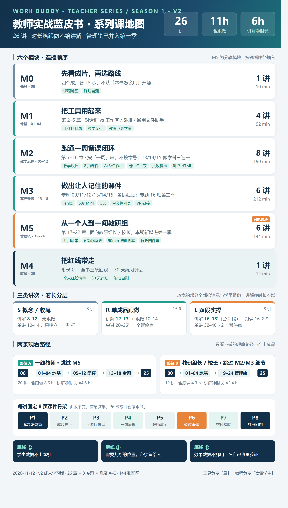
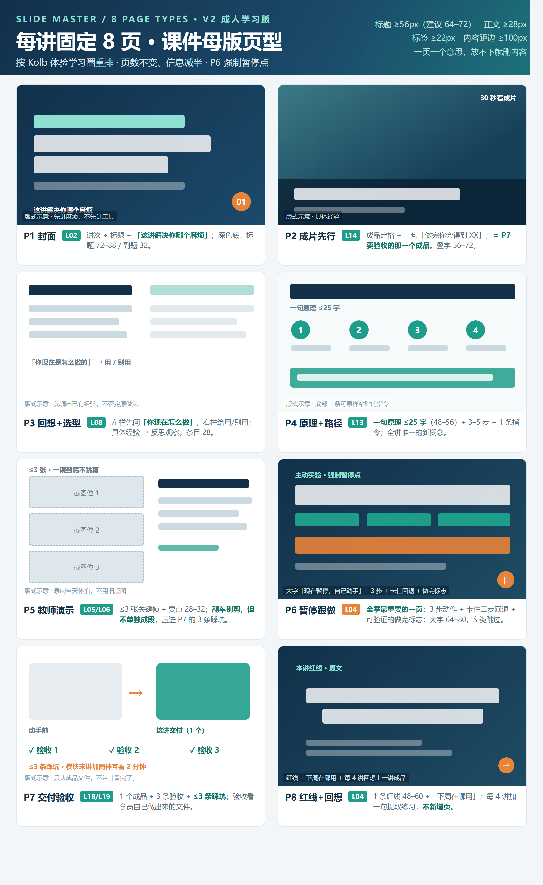

WORK BUDDY · TEACHER SERIES / SEASON 1 · V2 成人学习版
蓝皮书系列课 · 第一季课程包
26 讲 · 含跟做 11 小时 · 管理轨已并入 · 路径 A 前四节脚本与 34 页 PPT 已出
v2 按成人学习理论重排，改了三件事
时长分层
：S 概念讲 10–14′ / R 单成品跟做 20–26′ / L 双段实操 32–40′。放宽的部分
全部给演示与学员跟做
，讲解净时长不增反降。
内容做减法
：每讲 1 个成品、1 句原理（≤25 字）、≤3 条踩坑、1 条指令、1 条红线，并明确写出「本讲不讲」。
结构按 Kolb 体验学习圈
：具体经验 → 反思观察 → 一句原理 →
P6 强制暂停跟做
→ 提取练习；配 Knowles 六原则、认知负荷、Miller「知道≠会做」、70-20-10。
课程地图

六个模块 / 三类讲次 / 两条观看路径 / 8 页骨架 / 三条底线。可改源稿：
课程地图源.html
课件母版页型

P1–P8 版式示意，P6 为「暂停跟做」强制页。可改源稿：
课件母版页型源.html
文档
课程大纲_第一季.md
教学法依据 / 三类讲次 / 内容配额 / 26 讲逐讲「本讲不讲」
每讲课件骨架.md
新版 8 页母版 + 26 讲差异表（暂停点、卡住回退、做完标志）
课程地图源.html
改讲次、时长、模块名后重新出图
课件母版页型源.html
改配色、字号、页型说明后重新出图
路径 A 前四节 · 00 / 01 / 02 / 03
路径A_前三节_录制脚本.md
4 讲分钟级时间轴 + P1–P8 逐页文案与口播（03 已补入）
路径A_前三节_待补素材清单.md
20 个留白位：8 段视频 + 12 张截图，含 P0 与状态列
路径A_前三节_课件小样.html
32 页带留白框的课件小样，#00～#03 可单节查看
蓝皮书系列课_第一季课程包.pptx
34 页可直接放映：2 页总览 + 4 讲 × 8 页
第03讲_课件小样.png
新增讲的单节小样（00/01/02/03 四张都在本目录）
课程包说明.md
全包索引、开录顺序、留白状态与 PPT 用法
开场 + 前三课时 · 逐字稿
开场与前三课时_逐字稿.md
第 1 课时已改为「下载安装 / 面板 / 设置（缓存·工作文件夹·模型）/ 基础操作」；后两课时顺延
开场与前三课时_提词器.html
大字滚动版，可切换夜间，录课时放平板旁
每讲内容与提示词
每讲内容与提示词.md
按 M0–M5 六个模块，26 讲每讲讲什么 + 一条可复制主提示词 + 配套模板编号
课程包说明.md
全包索引、开录顺序、留白状态与 PPT 用法
怎么用这套材料
先定排期
：按课程地图走路径 A（一线教师 20 讲，8.6 h）或路径 B（教研组长 12 讲，4.3 h）；允许「只看不做」的观摩路径，但不产出成品。
再做课件
：每讲照母版摆 8 页，逐页文案从《每讲课件骨架》取；
P6 必须写暂停点、卡住三步回退和做完的标志
；P5 截屏位录制当天补拍。
后录样片
：先录 01（S）、05（R）、13（L）三种类型各一条，测讲解有没有超时、暂停点字幕够不够大、卡住回退说没说清；00 最后剪。
照顾起点
：默认老师不会命令行、装环境、看报错、配 API Key；高门槛内容只演示不跟做，卡住允许跳过走保底方案，练习一律用示例材料。
底线 ①
学生数据不出本机
底线 ②
需要判断的位置，必须留给人
底线 ③
效果数据不挪用，在自己班里验证